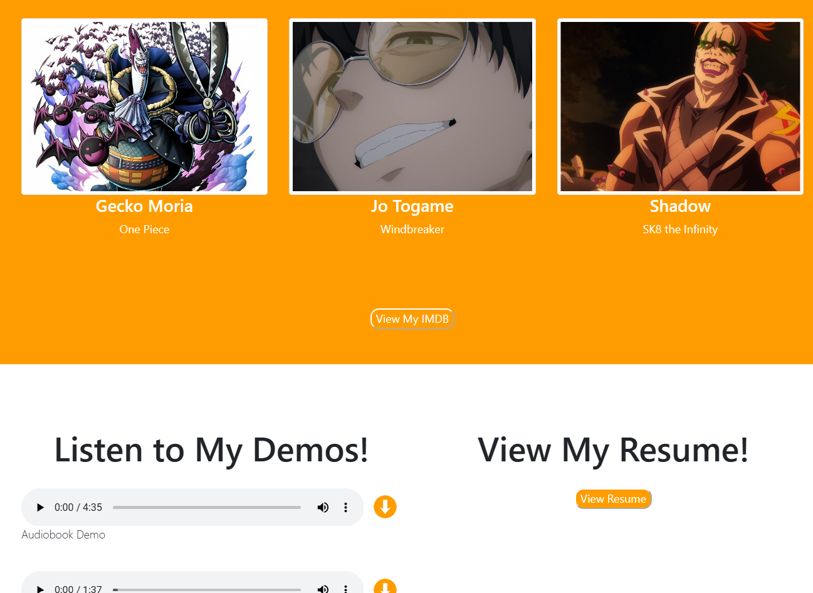
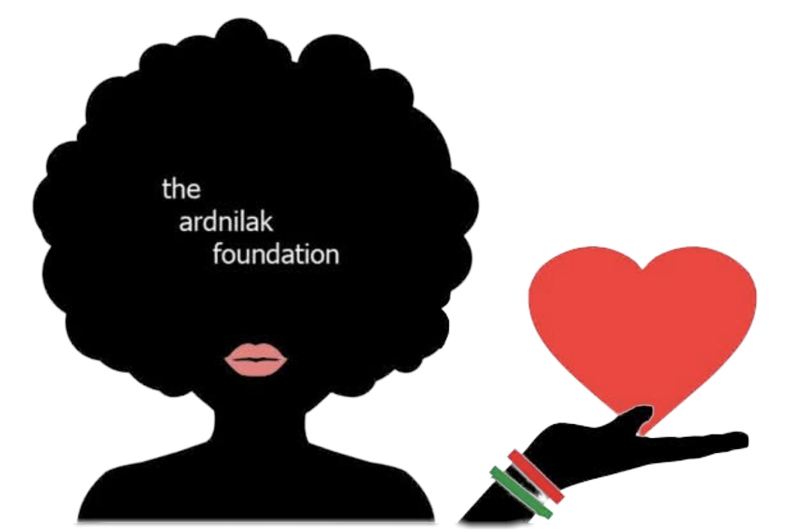
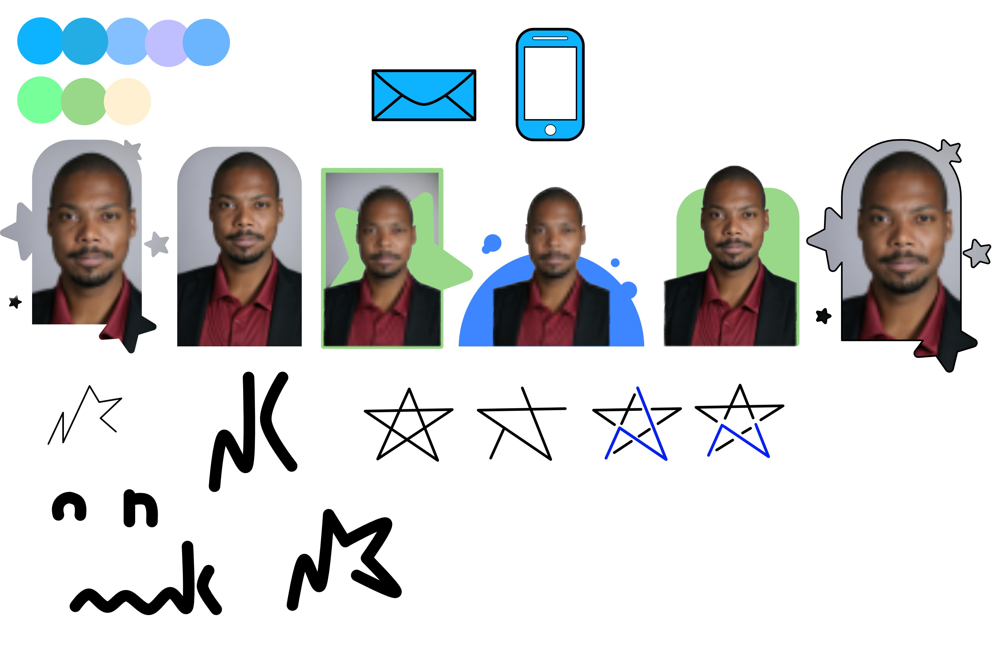

Click through my past projects and learn more about how I completed each design.

I will always cherish my first freelance project because it marks the beginning of my career. Through this experience, I learned new skills, adapted my UX knowledge to fresh ideas, and grew as a designer while collaborating with a client. It was a daunting task, as I had to learn how to not only work with a client, but how I best work on a project. I am grateful to have had this opportunity, and will look back on it with grateful eyes.

The Ardnilak Foundation is a very personal project as it is a non-profit that honors my late aunt. We wished to honor her memory by building a foundation in her name, giving back to the community she cherished. As the new designer, I was tasked to bring life back to the website and start the process from scratch.

My first portfolio was made without any character, as it was a project I had to complete for a class. I was very strict with the design and made no inspired design choices because I had graded expectations on what was to be put on the site. With the redesign, I wanted to start over and inject more time into my portfolio so it could be something I was proud to show off!